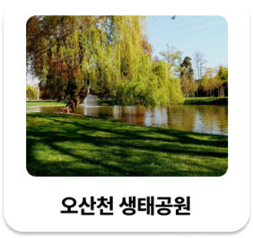

개인주의
코로나
스마트폰
우리의 삶을
바꿔놓은 코로나, 그리고 개인주의적인 삶을 살게 한 스마트폰은
활발한 야외 활동과 동네 안의 따듯한 교류를 줄어들게 만들었죠.
그래서, 우리는 고민했습니다.
이러한 문제를 해결할 방법이 없을까?
혼자 아닌 우리, 새로운 산책의 시작
포럼은 도시 숲 안에서 다른 사용자들과 함께 즐길 수 있는 다양한 콘텐츠를 제공하는 서비스입니다.
어떤 도시숲이든 방문만 한다면, 포럼에서 새로운 산책 경험을 만들어 드릴게요!
이제는 혼자가 아닌, 포럼과 함께!
개인주의
코로나
스마트폰
우리의 삶을
바꿔놓은 코로나, 그리고 개인주의적인 삶을 살게 한 스마트폰은
활발한 야외 활동과 동네 안의 따듯한 교류를 줄어들게 만들었죠.
그래서, 우리는 고민했습니다.
이러한 문제를 해결할 방법이 없을까?
아니다
38.6%
그렇다
61.4%
그 외의 산
대도시 인근 산
(명)
25000
15000
5000
20.9% 하락
19.3% 증가
2019
2020
코로나 발생 시점
2019년 코로나로 인해 줄어들었다고 생각했던 야외활동이, 사실 줄어들지 않았다는 것을 알고 계셨나요?
오히려 사람들은 도심에서 숲으로 이동하게 되었습니다.
하지만 이런 사회 현상 속, 10대~20대 연령층은 날이 갈수록 숲 방문은 점차 줄어들고 있는 상황이었습니다.
이러한 상황에서 우리는 미래세대의 숲 경험의 기회가 늘어야 하는 필요성을 느꼈습니다.
코로나 19 팬데믹 이후, 10대~20대의 디지털미디어 과사용 그룹이 약 2배 이상 증가하였습니다.
디지털미디어 사용량이 늘어날 수록, 자연스럽게 외출을 하는 빈도도 줄어들었으며
그와 함께 정신‧신체적 건강 문제 발생 비율도 높은 것으로 나타났습니다.
이에 대해 사회에서는 지속 가능한 디지털 사회를 위해 적절한 균형 조절을 위한 패러다임의
변화가 필요함을 지적하였고, 포럼은 이러한 변화에 앞장서기로 했습니다.
코로나 19 시대 스마트폰 과사용 2배 증가.. (2021.10.22), 김주연 기자
내 주변의 도시숲
정보를 한 눈에!
메인 화면으로 사용자를 위한 오늘의 숲 추천을 제공한 맞춤 서비스와
실시간 도시숲 이용자 수 정보와 함께 숲 관련 정보를
간결한 아이콘을 통해 제공해드립니다.
오직 나만을 위한 오늘의 숲 추천!
숲에 관련된 정보를 아이콘을 통해 한 눈에!

나와 가장 가까운 우리 동네 숲,
지금 무슨 일이 일어나고 있나요?
커뮤니티 타임라인을 통해 실시간 도시숲의 상황을 알아보세요!
또, 나에게 무슨 일이 일어난다면 글을 올려 사용자들과 소통을 경험해보세요.
지금 내 주변 도시 숲에는 어떤 일이?
더 안전하고, 더 재미있게!
근처 도시숲에서 일어나고 있는 일들을 확인해서
우리 동네 숲을 두 배로 즐겨보세요.

내가 선택한 경로 미리보기
오늘은 어떤 방법으로 도시숲을 즐겨볼까요?
경로를 미리 선택하고,
나만의 도시숲을 즐겨보세요!
지난 발자취 확인하기
여러번 방문한 도시숲이라면?
나의 지난 발자취를 확인해보세요.
내가 달성한 미션과 획득한 뱃지를 한 눈에!
숲에서 만난 우리, 서로 이야기를 나눠봐요
도시숲에 혼자 방문하셨다고요? 걱정하지 마세요!
현재 당신이 있는 도시숲의 반경 내에서만 작동하는 익명 채팅 기능을 통해,
새로운 사람과 새로운 방법으로 도시숲을 즐길 수 있어요!
커뮤니티를 통해
도시숲 상황을 공유하며
내 근처 주변 사람들과의 교류를!
다른 사용자들과 함께 상호작용하며, 새로운 재미를 찾아보세요.
내 주변 사람들에게,
지금 무슨일이 일어나고 있나요?

카테고리 태그를 통해 한 눈에!
총 네 가지의 카테고리 태그로
분류되는 글의 내용에 따라 한 눈에
내 근처 사람들의 소식을 확인해보세요.
다양한 미션을 수행하고 달성하여
많은 뱃지를 모아보세요!
매일 제공되는 새로운 미션을 통해 다양한 뱃지를 수집할 수 있어요.
다양한 뱃지를 모아
미션 랭킹 순위에 도전해보세요!
열심히 모은 뱃지를 통해
서로의 랭킹을 확인하고, 즐겁게 경쟁해보세요.